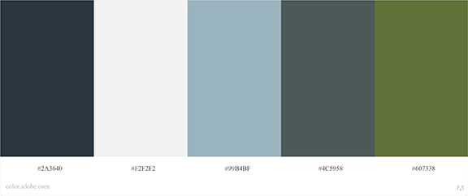
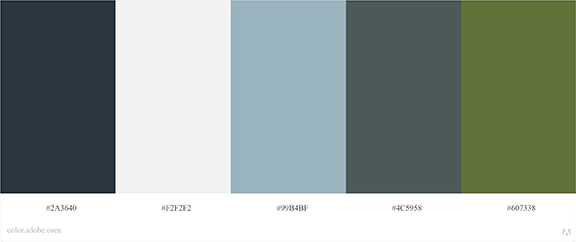

COLOR PALETTE
The website's color story takes inspiration from a rainy Pennsylvania day. There are stormy clouds, leafy-green trees, steel-colored lakes, and the washed-out blue of an emmerging clear sky.
The website's color story takes inspiration from a rainy Pennsylvania day. There are stormy clouds, leafy-green trees, steel-colored lakes, and the washed-out blue of an emmerging clear sky.
